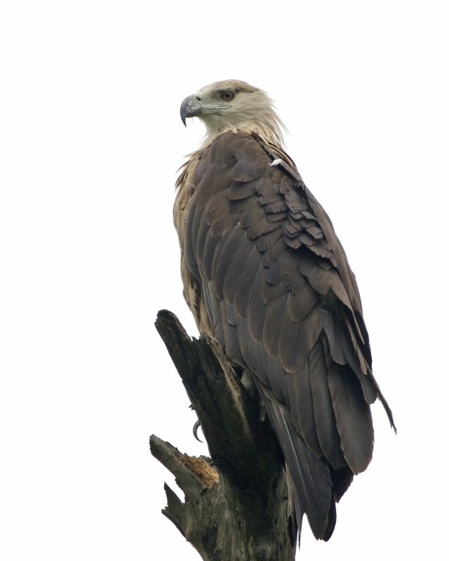

मछरंगPallas's Fish Eagle
Haliaeetus leucoryphus · Accipitridae · BRD-0344

- Scientific name वैज्ञानिक नाम
- Haliaeetus leucoryphus (Pallas, 1771)
- Family कुल
- Accipitridae
- Hindi हिंदी
- मछरंग
- Local names स्थानीय नाम
- macharang, machmanga, pallas fish eagle
- Status here यहाँ की स्थिति
- native
- Movement आवागमन
- Resident, here all year
- Known from कहाँ दर्ज
- Others have published records from the wider Awadh–Purvanchal plain, none yet from Basti–Ayodhya अवध–पूर्वांचल से दूसरों के प्रकाशित अभिलेख, बस्ती–अयोध्या से अभी नहीं
- IUCN IUCN
- EN
- Review समीक्षा
- not yet reviewed
When to look कब देखें
Present all year. साल भर मौजूद।
Tell it apart from इनसे अलग पहचानें
मछरंग / Pallas's Fish Eagle
Haliaeetus leucoryphus (Pallas, 1771) — Accipitridae
मछरंग — उत्तर भारत की बड़ी नदियों, झीलों और दलदलों के पास रहने वाला बड़ा मछलीमार गरुड़। इसका माथा मटमैला सफेद, सिर और गर्दन बादामी, शरीर गहरा भूरा, और काली-भूरी पूंछ के बीच में चौड़ी सफेद पट्टी होती है (बेकर 1928)। बेकर के अनुसार यह लगभग पूरी तरह मीठे पानी में मछली पकड़ता है और बड़े मेंढक व दूसरे सरीसृप भी नियमित खाता है। आईयूसीएन रेड लिस्ट में यह संकटग्रस्त (EN) है।
Quick Identification त्वरित पहचान
| Feature | Description | |
|---|---|---|
| Habit | Massive, powerful diurnal fish-hunting eagle of large rivers and wetland lakes | |
| Size | Very large eagle with broad wings and heavy bill, noticeably larger than a [[lesser_fish_eagle | Lesser Fish Eagle]] |
| Head & Neck | Pale creamy-buff or sandy-whitish head, neck, and upper mantle | |
| Body Plumage | Rich dark rufous-brown back, wings, and underparts | |
| Tail | Broad, dark blackish-brown tail with a conspicuous, broad white band across the middle | |
| Bill | Large, powerful dark slaty-black or plumbeous bill with paler cere and gape (Baker 1928, p. 113) | |
| Flight | Enormous broad rectangular wings held flat in soaring flight |
Field tip: In flight, look for the pale creamy hood contrasting with the dark rufous body and the striking broad white band across the dark tail.
हिंदी:
मछरंग का सिर हल्का सफेद-बादामी होता है और पूंछ पर एक चौड़ी सफेद पट्टी होती है जो उड़ते समय साफ दिखाई देती है।
Morphology आकारिकी
Measurements as given by Baker (1928):
| Measurement | Range |
|---|---|
| Tail, Tarsus & Culmen | tail 271 to 275 mm. ; tarsus about 100 to 103 mm. ; culmen 50 to 55 mm. (Baker 1928 as Haliaetus leucoryphus) |
The Pallas's Fish Eagle is an imposing raptor with broad wings and an extraordinarily heavy hooked beak. The adult has a pale fulvous-white or creamy-buff head, neck, and upper back, darkening gradually into rich rufous-brown on the mantle, scapulars, and lower plumage. The wings are dark blackish-brown (Baker 1928, p. 113).
The tail is dark blackish-brown with a broad, unmistakable white band across its middle third. Soft parts as described by Stuart Baker (1928, p. 113): "Iris greyish-yellow to yellow; bill dark slaty-black or plumbeous, the cere and gape paler; legs and feet dull white, yellowish-white or dull yellow, claws black."
Vocalisations. Stuart Baker (1928, p. 113) described the voice: "They are noisy birds, constantly uttering their loud far-resounding call."
हिंदी:
बेकर (1928) के अनुसार इसकी पूंछ 271 से 275 मिमी, टार्सस 100 से 103 मिमी और कल्मेन 50 से 55 मिमी होता है। इसका सिर मटमैला सफेद और पूंछ पर चौड़ा सफेद पट्टा होता है। बेकर के अनुसार ये शोर मचाने वाले पक्षी हैं जो अपनी तेज, दूर तक गूंजने वाली आवाज निकालते हैं।
Behaviour & Ecology व्यवहार और पारिस्थितिकी
Haliaeetus leucoryphus is almost entirely a fresh-water fisher, haunting large rivers, swamps, and lakes (Baker 1928, p. 113).
Stuart Baker (1928, p. 113) described its habits: "when it builds near fishing villages does not disdain offal whether of fish or animals and sometimes also steals chickens and ducks. Reptiles of all sorts are eaten regularly, especially the huge bull-frogs... I have seen this Eagle seated on carcasses floating down a river and feeding thereon. It is a cowardly bird and never to my knowledge defends young or nest, though Hutton gives a graphic description of a most ferocious defence put up by a pair of these Eagles in defence of two young ones."
हिंदी:
बेकर (1928) के अनुसार यह ताजे पानी की नदियों और झीलों में मछलियां पकड़ता है, मछली पकड़ने वाले गांवों के पास अवशेष खाता है तथा मेंढक, सरीसृप, मुर्गियां और बत्तखें भी चुराता है।
Life Cycle / Phenology जीवन चक्र
Breeding takes place from November to March, making "a huge stick-nest high up in a large tree. Generally the tree is on the bank of one of the larger rivers, swamps or lakes, occasionally some distance away from water in a tree in or near some fishing village" (Baker 1928, p. 113).
Stuart Baker (1928, p. 113) recorded: "The eggs number two to four and are pure white, the shape normally a broad oval and the texture very coarse but the actual surface fairly smooth."
हिंदी:
बेकर (1928) के अनुसार यह नवंबर से मार्च के दौरान नदियों या झीलों के किनारे बड़े पेड़ों पर टहनियों से भारी घोंसला बनाता है। इसमें दो से चार तक शुद्ध सफेद अंडे दिए जाते हैं।
Host Plants or Prey आहार
Pallas's Fish Eagle consumes freshwater fish, offal, reptiles including bull-frogs, chickens, ducks, and animal carcasses floating in rivers (Baker 1928, p. 113). No source opened for this atlas names the bullfrog to species level.
हिंदी:
बेकर (1928) के अनुसार यह ताजे पानी की मछलियां, मेंढक, सरीसृप, मुर्गियां, बत्तखें और नदियों में तैरते पशुओं के शव खाता है।
Predators / Natural Enemies शत्रु
No source opened for this atlas names a specific predator of this bird.
हिंदी:
इस एटलस के लिए खोले गए किसी भी स्रोत में इस पक्षी के किसी विशिष्ट शिकारी का नाम नहीं है।
Agricultural / Human Relevance कृषि प्रासंगिकता
No source opened for this atlas describes this bird's dealings with people. Protected under the Wildlife (Protection) Act, 1972.
हिंदी:
इस एटलस के लिए खोले गए किसी भी स्रोत में लोगों के साथ इस पक्षी के व्यवहार या संबंधों का विवरण नहीं है। यह वन्यजीव (संरक्षण) अधिनियम, 1972 के तहत संरक्षित है।
Expected Locally स्थानीय रूप से अपेक्षित
Not a field record. Written from published accounts for eastern Uttar Pradesh. No confirmed local sighting yet — if you have seen it, that is what the atlas needs.
अभी तक स्थानीय पुष्टि नहीं। यह विवरण प्रकाशित स्रोतों से है, किसी अवलोकन से नहीं।
GBIF holds published records from the wider Awadh–Purvanchal plain, none yet from Basti–Ayodhya.
A first record would be a photograph of the bird with place and date, sent through the About page.
Distribution वितरण
Stuart Baker (1928, p. 113) recorded the distribution: "The Caspian and Black Seas, Persian Gulf, Northern India and Burma but not South India, South Burma or Ceylon."
In Uttar Pradesh, GBIF holds published records from Lakhimpur Kheri and Unnao.
हिंदी:
बेकर (1928) के अनुसार इसका विस्तार कैस्पियन सागर, फारस की खाड़ी, उत्तरी भारत और बर्मा तक है। उत्तर प्रदेश में जीबीआईएफ के रिकॉर्ड लखीमपुर खीरी और उन्नाव से हैं।
Research Questions शोध प्रश्न
- Are remnant nesting pairs of Pallas's Fish Eagle maintaining active territories along the Ghaghara river corridor in eastern Uttar Pradesh? / क्या पूर्वी उत्तर प्रदेश में घाघरा नदी के किनारे मछरंग के घोंसले अभी भी सक्रिय हैं?
- How has the intensification of commercial gill-net fishing influenced foraging success and nestling survival in large inland waters? / बड़े जलाशयों में व्यावसायिक मछली पकड़ने से मछरंग के शिकार पर क्या प्रभाव पड़ा है?
- What is the impact of wetland drainage and flood-control embankments on prime eagle nesting trees along riverbanks?
- Do persistent organochlorine pesticides or industrial effluents in riverine fish affect shell thickness in this endangered eagle?
- Can local boatmen and fishermen assist in reporting nesting trees without disturbing breeding pairs? (Fishermen can document active nest sites and river stretches where eagles feed.)
Similar Species मिलती-जुलती प्रजातियाँ
| Species | How to tell apart | हिंदी | |
|---|---|---|---|
| [[grey_headed_fish_eagle | Grey-headed Fish Eagle]] (Icthyophaga ichthyaetus) | Grey head, white belly, and tail white with a broad terminal blackish band | मधुया |
| [[osprey | Osprey]] (Pandion haliaetus) | Much smaller, contrasting white underparts with dark eye-stripe, and long narrow angled wings | मछलीमार |
| [[lesser_fish_eagle | Lesser Fish Eagle]] (Icthyophaga humilis) | Smaller build, greyish head and breast, and darker tail with blackish subterminal band (Baker 1928) | लेसर फिश-ईगल |
Field rule: The immense size, pale creamy-buff hood contrasting with dark rufous body, and broad white band across the middle of the dark tail distinguish Pallas's Fish Eagle.
हिंदी:
लेसर फिश-ईगल का आकार छोटा और पूंछ पर सफेद पट्टी नहीं होती; मछरंग के सिर पर हल्का रंग और पूंछ पर चौड़ी सफेद पट्टी होती है।
Taxonomy & Classification वर्गीकरण
Original description. Described by Peter Simon Pallas in 1771 in Reise durch verschiedene Provinzen des Russischen Reichs (Vol. 1, p. 454), under the basionym Aquila leucorypha. The type locality is Lower Ural River (Baker 1928, p. 112).
Synonyms and historical names. Stuart Baker (1928, p. 112) treated the species under Haliaetus leucoryphus, recording the Hindi names "Macharang, Machmanga, Dhenk, Patras (Hind.)".
Subspecies. Monotypic; no subspecies are currently recognised across its Asian range.
Family and order placement. Order Accipitriformes (hawks and eagles); family Accipitridae (accipitrid raptors); genus Haliaeetus.
IUCN status rationale. Evaluated as Endangered (EN) by the IUCN Red List (BirdLife International 2021).
हिंदी:
पलास ने 1771 में इसका वर्णन किया था। बेकर ने इसे Haliaetus leucoryphus के तहत दर्ज किया और मछरंग व मछमंगा नाम दिए। यह एक्सीपिट्रिडी कुल का सदस्य है और संकटग्रस्त (EN) है।
Photo Gallery फोटो गैलरी
No photos yet — add field photos to media/species/pallas_fish_eagle/ and run node scripts/sync_photos.js.
Photos needed आवश्यक फोटो
- [ ] Adult perched on riverside tree showing pale hood and heavy bill (नदी किनारे पेड़ पर बैठा वयस्क)
- [ ] Flight view from below showing white tail band and dark wings (उड़ान के दौरान पूंछ का सफेद पट्टा)
References संदर्भ
- Pallas, P. S. (1771). Reise durch verschiedene Provinzen des Russischen Reichs. Vol. 1. Kayserliche Academie der Wissenschaften, St. Petersburg, p. 454 (as Aquila leucorypha).
- Baker, E. C. S. (1928). The Fauna of British India, Including Ceylon and Burma. Birds. Vol. 5. Taylor & Francis, London, p. 112 (as Haliaetus leucoryphus).
- Ali, S. & Ripley, S. D. (1987). Compact Handbook of the Birds of India and Pakistan. Oxford University Press, New Delhi.
- Grimmett, R., Inskipp, C. & Inskipp, T. (2011). Birds of the Indian Subcontinent. 2nd ed. Christopher Helm, London.
- BirdLife International (2021). Haliaeetus leucoryphus. The IUCN Red List of Threatened Species 2021: e.T22695130A199521572. doi:10.2305/iucn.uk.2021-3.rlts.t22695130a199521572.en
- GBIF Occurrence Data — Haliaeetus leucoryphus, India (2025).
Source file: species/fauna/birds/pallas_fish_eagle.md